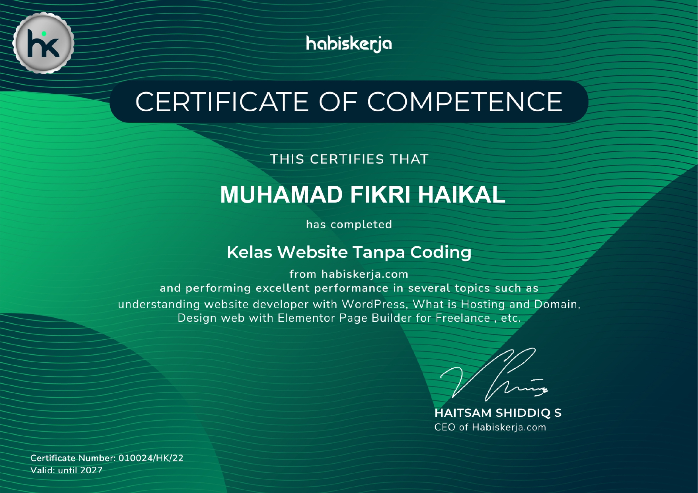
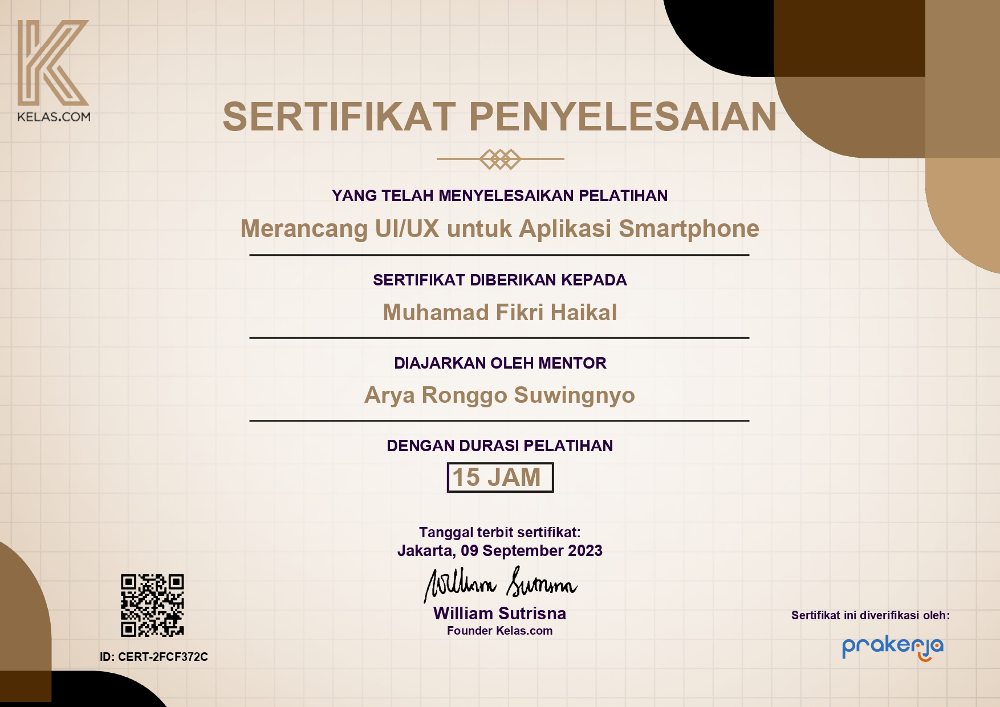

WordPress Developer
Sertifikat WordPress Developer: Memiliki keahlian dalam membangun website dengan WordPress, yang merupakan salah satu platform terkemuka dalam industri pengembangan web. Saksikan kemampuan saya dalam membangun situs web yang menakjubkan dan fungsional menggunakan WordPress!
Lihat Detail

UI Design
Sertifikat UI Design: Sebagai seorang pengembang web, saya memiliki keahlian dalam desain antarmuka yang memastikan website yang saya bangun tidak hanya fungsional, tetapi juga indah dan menarik. Sertifikat ini membuktikan kemampuan saya dalam merancang pengalaman pengguna yang memikat, memastikan setiap pengunjung terpesona dengan tampilan dan interaksi website yang saya kembangkan.
Lihat Detail